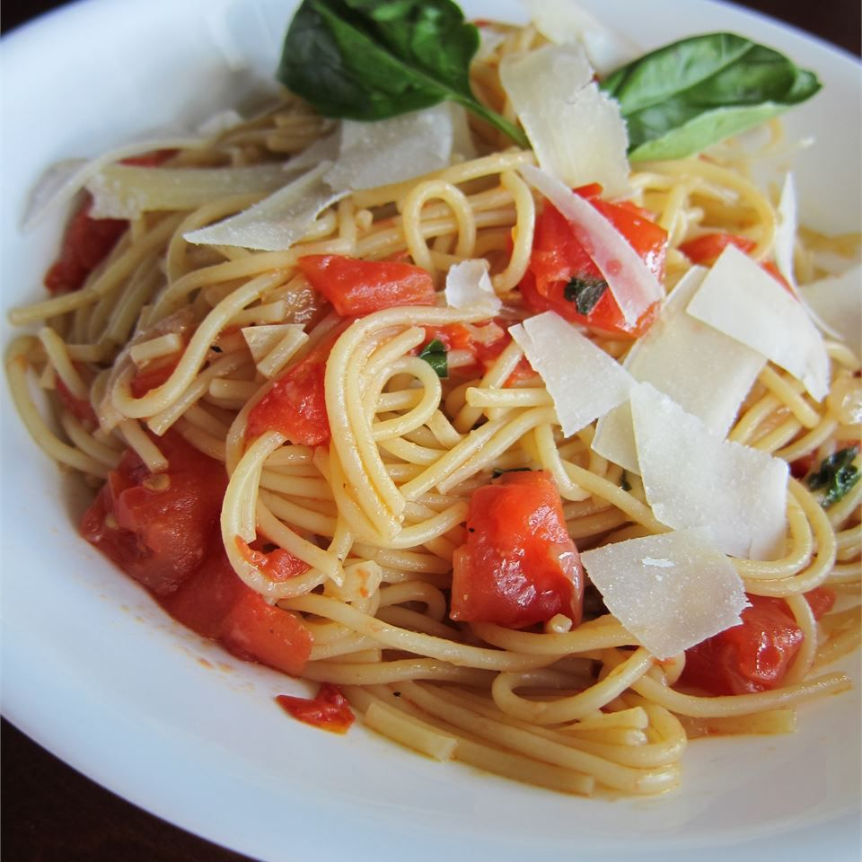

Pasta Pomodoro

Description
Pasta pomodoro is an Italian food typically prepared with
pasta, olive oil, fresh tomatoes, basil, and various other fresh ingredients.
It is intended to be a quick and light dish, rather than a dish in a heavy sauce.
Cooked chicken breast chunks or shrimp can also be added to sauce for a great main dish!
Ingredients
- 1 (16 ounce) package angel hair pasta
- ¼ cup olive oil
- ½ onion, chopped
- 4 cloves garlic, minced
- 2 cups tomatoes, diced
- 2 tablespoons balsamic vinegar
- 1 (10.75 ounce) can low-sodium chicken broth
- freshly ground black pepper to taste
- crushed red pepper to taste
- 2 tablespoons chopped fresh basil
- ¼ cup grated Parmesan cheese
Steps
- Bring a large pot of lightly salted water to a boil.
Add pasta and cook for 8 minutes or until al dente; drain.
- Pour olive oil in a large deep skillet over high-heat. Saute onions and garlic until lightly browned.
Reduce heat to medium-high and add tomatoes, vinegar and chicken broth; simmer for about 8 minutes.
- Stir in red pepper, black pepper, basil and cooked pasta, tossing thoroughly with sauce.
Simmer for about 5 more minutes and serve topped with grated cheese.
Return to Odin Recipes